|
Main Instructor Lab |
NetworkMapOfFacebookFriendsNetwork Map of Facebook friends Proposed by Teodoro Fields Collin StatementThe objective of this project is to build a program, which given your Facebook username/password and an integer n will produce a network map of friendships up to n friendships away from you. The graph itself should be composed of nodes, which represent people, and edges, which represent friendships. NotesThis project will involve multiple parts and I would like to quickly comment on them:
I will note that accuracy of this graph is going to be naturally restricted by Facebook's privacy settings and suggest that we just accept that. Lastly, I will note that this could be modified to add additional attributes to a graph. For example, the color of a node could represent group membership (e.g. Maroon for anyone who is part a group with UChicago in the name). The terminal commands should look something like this: facebookgrapher username pass 5 [A lot of output of what it is doing, which you will probably want in the initial stages to detect errors anyway or we could write this to a log file] The graph for username has been created and named "graph.png" Part 1: Getting to the facebook newsfeed.(By Teodoro Fields Collin) I have successfully wrote a python script that will get to, login into facebook, and get to the news feed. I have most of the rest of this program figured out and hope to be finished soon, but I thought I would document this stage while it was fresh in my head. Of the tools for emulating a web browser in python, I opted to use mechanize. Urlib is horrible and requests lacks a crucial feature. Mainly, requests doesn't exactly simulate a web browser... And, we need something close to an actual browser for a two reasons. First, because facebook won't let an unidentified browser use their site, so we use br.addheaders = ... to assign some browser id. Second, we need to be able to handle cookies. To do this, we also need something called cookielib and to tell mechanize that we need handle cookies. This almost allows us to login. Despite being pretty good, mechanize has some flaws, most notably it doesn't support javascript, which is important because facebook requires javascript. However, that is just the desktop version of facebook. Since various mobile devices don't have javascript and facebook wants mobile users, the mobile version doesn't require it, so we go to the mobile version using the following: br.open('https://m.facebook.com/') Now, to login, we identify the forms that we need to submit to facebook, fill them, and submit them, which is done like this: def login(email, password): br.form['email'] = email br.form['pass'] = password br.submit() login(your_email, your_password) However, we will not reach our news feed or profile page, instead, facebook might freakout because we are logging in from a new device or browser. So, we need to use mechanize to hit all the right buttons to get past all of this crap. This requires a lot of messing around with mecahinze's ways of using browser controls. I use this tutorial and I cite some of their techniques in the code. Specifically, using the methods, I write a function that prints out the available controls and a function that prints the raw html response: def control_explore(br): br.form = list(br.forms())[0] for form in br.forms(): print form for control in br.form.controls: print (control, control.type, control.name, br[control.name]) def print_response(br): print br.response().read() return () I load what I have so far into an python session via my command line. I use these tools to navigate getting by all of facebook's login checkpoints (that I know of) by hand. I write down the things that I have to do and turn them into functions, resulting in functions like "say_this_is_okay()". I note the conditions in which I have to do these things. In order to recognize these conditions, I do not look at the raw html, instead, I use a library built for dealing with HTML, called BeautifulSoup. I also use the number of controls available, working under the assumption that the facebook page has dramatically more options than a login checkpoint. I then combine all of this into a function to get me from logging in to the news feed. The function is called "control_control()" The result of all of this is a function which gets us from facebook's concerns about my security to the news feed. And, it seems to work and I can verify the output by looking at a print out of the html. This works with my account, due to varying security settings, it might require further modifications. Here is the code as it currently stands minus my username, password, doctstrings, and some pep: __author__ = 'teo' import mechanize import cookielib from bs4 import BeautifulSoup br = mechanize.Browser() # set up browser # sets up cookie handling br.set_handle_robots(False) cj = cookielib.LWPCookieJar() br.set_cookiejar(cj) br.set_handle_equiv(True) br.set_handle_redirect(True) br.set_handle_referer(True) # The three are to do deal with login redirects br.addheaders = [('User-agent', 'Mozilla/5.0 (X11; Linux x86_64) AppleWebKit/537.36 (KHTML, like Gecko) Chrome/39.0.2171.95 Safari/537.36')] # set browser id br.open('https://m.facebook.com/') # gets us to the login page br.select_form(nr=0) your_username = "" # set it your_password = "" # set it def print_response(br): print br.response().read() return () def login(email, password): br.form['email'] = email br.form['pass'] = password br.submit() def say_yes_basic(br): br.form = list(br.forms())[0] control = br.form.find_control("submit[Continue]") br[control.name] br.submit() def say_this_is_okay(br): br.form = list(br.forms())[0] control = br.form.find_control("submit[This is Okay]") br[control.name] br.submit() def control_something(br,something): br.form = list(br.forms())[0] control = br.form.find_control(something) br[control.name] # cite http://www.pythonforbeginners.com/cheatsheet/python-mechanize-cheat-sheet def control_explore(br): br.form = list(br.forms())[0] for form in br.forms(): print form for control in br.form.controls: print (control, control.type, control.name, br[control.name]) def request_to_soup(br): return (BeautifulSoup(br.response().read())) def ncontrols(br): br.form = list(br.forms())[0] return [control.name for control in br.form.controls] def go_to_profile(br, name): br.open('https://m.facebook.com/' + name) br.submit() def control_control(br): soup_response = request_to_soup(br) br.form = list(br.forms())[0] n = len(ncontrols(br)) print n print soup_response.title.text if n > 10: print "Bypassed Facebook security" return () if soup_response.title.text == "Remember Browser": print "not remembering" say_yes_basic(br) control_control(br) if soup_response.title.text == "Review Recent Login": #Two almost identicial options... try: print "reviewing" say_yes_basic(br) control_control(br) except mechanize.ControlNotFoundError: say_this_is_okay(br) control_control(br) login(your_username, your_password) control_control(br) print_response(br) print request_to_soup(br).prettify() # output verify Parts 2 & 3:Part 2: Scrapping friends, friends of friends, and what not.Part 3: Storing the Data as a graph and outputting it.Warning: This section is still requires some copy editing/ looking over for trivial mistakes in the writting.(Note: If you just want to see the code, it is at the very bottom of my archive of my thought process) So, as it turns out, due to the way the mobile version of Facebook works, scrapping my direct friends and everyone else's (friends of friends of ...) are two distinct challenges. My friends are at the url: https://m.facebook.com/friends/center/friends/?ref=bookmark and since I have about 9 of them, this is all I need to do. This is going to be a consistent theme in this code; I’ve only tested it on my self. I will probably create a test profile and friend everyone here to test it with more than just 9. Anyway, from the friends page, getting the list of friends is trivial because Facebook labels all of them with the same class on my profile. So, we convert the page to a bs4 object and get a bs4 object for each friend listing: def get_my_friends(br): soup = request_to_soup(br) return soup.find_all('div', class_='x e y') Now, for reasons completely former to me, it doesn’t link directly to the profile page. So, I opt to simply extract the uid, (which is just a string of digits that can allow us to access someone’s profile page by going to m.facebook.com/uid . You can find your uid on this site) and the user name. This is accomplished using regular expressions of the url and bs4 tag system: def my_friend_to_uid(soup):
return re.search('(?<=uid=)[0-9]*', soup.a.get('href')).group(0) def my_frend_to_name(soup): return soup.span.text With these tools, we can get all of my friends’ names and uids: go_to_my_friends(br)
a = get_my_friends(br) my_friends_uid = [my_friend_to_uid(a2) for a2 in a] my_friends_names = [a1.span.text for a1 in a] Now, we effectively have the first set of edges, one for each friend, constituting the friendship between myself and all my friends. I could keep track of this with a list of edges, but I think there might be a better way. There is a library for the creation, storing, analysis, and display of graphs. It is called networkx and it scales fairly well. A graph can be generated like this: graph = nx.Graph() and I can add my new edges like this: graph.add_edges_from([(profile_name, a1.span.text) for a1 in a]) So, at each turn, I just add the edges to the graph and continue on. Having done all of this, we have effectively covered the first degree of separation. Now, we need to grab all my friends of friends and friends of friends of friends, and so on. When we go to some other page, we will already have gotten their uid or profile name from whoever we scrapped from. To do this, we need to go to their page, and then append ?v=friends&startindex=00 and go to the new url, which will be the location of the list of this person’s friends. This is accomplished with this: def friends_friends_page(br, uid): sleep(randint(1,2)) go_to_profile(br, uid) actual_profile_url = br.geturl().replace('?_rdr','') # removes redirect info print actual_profile_url + '?v=friends&startindex=00' sleep(randint(1,10)) br.open(actual_profile_url + '?v=friends&startindex=00') print br.geturl() # prints some feedback so we can traceback errors Unlike before, we have no assurances that all the friend listings will have a particular class tag. So, after much comparison, I came up with a set of criteria that will detect if a tag is a friend listing and made a function that tests them: def is_a_friend(tag): """ :argument a bs4 object which may or may not have the link to someone's facebook friend :return Boolean Returns true if there is a friend and returns false if there isnt """ a = tag.has_attr('class') b = len(tag.find_all('a')) == 2 or len(tag.find_all('a')) == 1 c = tag.img == None d = tag.table == None e = not tag.has_attr('id') return a and b and c and d and e We can use this to filter out all the bs4 objects that contain friends from a set of possible candidates: def get_friends_of_friends(br): soups = request_to_soup(br) return filter(is_a_friend, (soups.find_all('div'))) Due to the nature of the mobile site, running the above right after we get to the friends page of someone will not yield all their friends, but only the first ten or twenty. On the actual mobile site, you would need to scroll down. However, scrolling is not exactly something within our current capacities. Thankfully, scrolling is really just trigger the loading of a webpage which is nicely labeled with id=m_more_friends. So, I can get that location, and from extract the new starting index for looking at friends using the regular expression: '(?<=startindex=)[0-9]*' I can then change the starting index part of the url to reflect where we are and carry on the scraping. Replacing scrolling with loading a url means that I do have to grab friends and then load the url, and do it all again until there is no more new friends, signified by the lack of a tag with id=m_more_friends. This ends up being coded as three functions. We use friends_friends_page to get us to the the starting friend page. Then, we use the initial writing of get_friends_of_friends to get the first list of friends, then we pass the result and the current browser state to get_rest_friends_of_friends which will continue to add the friend’s friends to our total until it can’t anymore. This all looks like this: def get_rest_friends_of_friends(br, initial_friends): soup = request_to_soup(br) index_locations = soup.find_all('div', id="m_more_friends") # print index_locations if len(index_locations) != 0: strip = re.compile('=[0-9]*') current_url = (br.geturl()) # print current_url index_location = index_locations[0].a.get('href') newindex = re.search('(?<=startindex=)[0-9]*', index_location).group(0) tempurl = re.sub(strip, '=', current_url) newurl = tempurl + newindex print newurl try: br.open(newurl) except URLError: print "Network problems" sleep(randint(150,300)) try: br.open(newurl) except URLError: sleep(randint(800,1600)) br.open(newurl) initial_friends += get_friends_of_friends(br) #print initial_friends sleep(randint(0, 2)) get_rest_friends_of_friends(br, initial_friends) return initial_friends def get_all_friends(br, id): """ :argument a mechanize browser and an user id of some type :return all of a user's friends (that we can see..) This combines getting the initail friends with scrolling down adding more friends """ friends_friends_page(br, id) sleep(randint(1,2)) return get_rest_friends_of_friends(br, get_friends_of_friends(br)) The reason that I use exceptions and long waiting periods is that sending lots of requests as required by this method can result in either the network I’m operating on getting disconnected or Facebook temporarily sending a 500 error. So, I simply have it wait. This is a rather simple way of dealing with the problem. As I add to this, I will probably create a wrapper like function for opening urls that has those sort of precautions builtin. Moving on, now that we have a way of getting someone else’s list of friends, I can combine it with our method of adding friends to the graph and the recursion needed to reach a certain depth level as specified by the user. This results in a function which given the browser state, the current depth, the person who we are scrapping, and the person who we found them through (i.e. their friend). And, it gets all of the new person’s friends, adds the edge between the friend that got them their and all of their friends, and, then, recurses by mapping itself on to a list of its friends names and ids, decrementing the depth level and passing the browser state each time. The function looks like this: def friends_graph(br, n, id, name,): """ :argument a mechanize browser :argument the currrent depth :argument the id of the user whose friends we are scrapping and adding to the graph :argument the name of the user who they are friends with """ print ('id is', id) print ('name is', name) friends_friends = get_all_friends(br, id) if friends_friends is None: print "Reached End" try: friends_friends_names = [a1.span.text for a1 in friends_friends] friends_friends_ids = [a1.a.get('href').replace('?fref=fr_tab', '').lstrip('/') for a1 in friends_friends] except NameError: print "Security settings" return () except AttributeError: print "security settings" return () # print friends_friends_ids graph.add_edges_from([(name, a1) for a1 in friends_friends_names]) #nx.draw(graph) #plt.savefig('crap.png') nx.write_dot(graph, 'mtemp.dot') if n - 1 == 0: print "Reached End" return () map(lambda ids, names: friends_graph(br, (n - 1), ids, names), friends_friends_ids, friends_friends_names) print "we have completed" + str(name) nx.write_dot(graph, 'temp.dot') Note, nx.write-dot takes the current state of the graph, with all of its edges, and writes a dot file. A dot file is a file that can be used by various programs to produce a graphical representation of a network graph. You can find more information here. So, I then combine the setup for getting the initial persons friends, this function, and nx.write dot to write the main function, which simply takes a level of depth and then ends with the creation of a dot file with all the information that we scrapped and put into the graph. Here it is: def main(n, your_email1, your_password1): """ :argument The degrees to cover :return None """ profile_name = "Teodoro Fields Collin" login(your_email1, your_password1, br) control_control(br) go_to_my_friends(br) a = get_my_friends(br) my_friends_uid = [my_friend_to_uid(a2) for a2 in a] my_friends_names = [a1.span.text for a1 in a] graph.add_edges_from([(profile_name, a1.span.text) for a1 in a]) # Adds all my friends to the graph # Completes the first degree of sep map(lambda uids, names: friends_graph(br, (n - 1), uids, names), my_friends_uid, my_friends_names) # runs the functions for getting everyone else's friends on all my friends print "Just needs to be drawn" nx.write_dot(graph, 'results.dot') print "done" main(3, your_email, your_password) # runs it for three degrees So, now we have a dot file with our info and we can do things with it, which I will address shortly after I make quick note. I have run the program on myself and it finishes in around 16 hours. It used to be faster, but then I added the random delays to avoid getting blocked from Facebook (and pissing off my entire house) and also avoiding their 500 errors. I plan on making another account and friending more people so that I can figure out some of the problems that may emerge if has to run for a longer period of time. But that will come later and be documented in a later stage. Part 4: GraphingGraphiz has quite a few methods of graphing large files and I have tried a few. They all end in either the process being killed or a series of bizarre errors concluded with segmentation fault. I suspect that the file has simply too much data for gaphiz. I ran wc -l on it and it reported that it had 370k edges (one edge per line). I will have to look into other options, but if none are available, all hope is not lost. Networkx posses the ability to reimport the dot file. It also posses the ability to measure or estimate a bunch of properties. I will write with another program that imports the file and measures the density, attempts to find the central node, tests other things like if on average a person’s friends have more friends than they do or anything else that I can come up with. Lastly, networks can create subgraphs and I may just graph many portions of the graph. Current Conclusions:
Part 5: Reimporting and AnalysisNetworkx posses the native ability to reimport dot files as graph objects, or, so I thought it did. When I tried to reimport it threw a unicode related exception. Upon further examination, I found that it relies on something called pygraphviz to reimport the data file, and this library was written in a unicode unfriendly manner, from what I can see. The main problem is that people have names with non-english characters. People can have umlauts in their name or their names can be in Chinese, Japanese, etc... I attempted to see if the library had some option that I could change to solve the problem. It didn't. So, I had to quickly write a function to convert unicode to ascii while maintaining the structure of the graph. To do this, I used the library Unidecode which will convert unicode characters in other languages to equivalent english, by some rules that seem to for the most keep things one to one. I also used Unicode Data to write all of it to a file. All of this results in a function which converts are unicode dot file to ascii while maintaining the structure of the graph: def correct(): file = open('results.dot','r') all = file.read() file.close() allb = unicode(all, 'utf-8') allc = unidecode(allb) alla = unicode(allc, 'utf-8') b = unicodedata.normalize('NFKD', alla).encode('ascii', 'ignore') f = open('try.dot','w') f.write(b) With this solved, I was able to start writing some functions to mess around with the analysis capabilities of networkx. Here is a basic start: def graph_analysis(): A = pygraphviz.AGraph(file='try.dot', encoding='ascii') a = nx.from_agraph(A) print((max(nx.degree_centrality(a).values()))) As it turns out, I can't actually think of much analysis to do on this data. If anyone has any ideas, I will be happy to implement them, but for now, I will just settle for the friendship paradox. Here is the code for that. For the record, within 3 degrees of me on facebook, not accounting for privacy settings and peripheral nodes, on average someone's friends have 495 more friends than they do. def friendship_paradox(graph): """ :param graph digraph :return returns the average dif between the number of friends that a node has and the average number of friends the node's friends have """ for x in graph.nodes(): graph.node[x]['nf'] = len(graph.successors(x)) # computes number of friends for x in graph.nodes(): graph.node[x]['nff'] = sum([graph.node[z]['nf'] for z in graph.successors(x)]) / (1 + len(graph.successors(x))) # computers the average number of friends that one's friends have return sum([graph.node[x]['nff'] - graph.node[x]['nf'] for x in graph.nodes()])/len(graph.nodes()) # returns average dif between the two numbers over all nodes. Part 6: A final attempt at graphing.As I have found that the tools at my disposal are unable to graph really large network graphs and I have no desire to reinvent the wheel, I decided to reduce the problem to graphing all the sub-graphs around all the sub-nodes. This result in a function to create a bunch of sub-graphs (by listing all the involved nodes and passing it to a filter function made for creating subgraphs) and a function to graph them (by writing them to .dot files): def all_sucs_not(graph, start, exclude, n): """ :param graph a digraph :start The person you are centering on :exclude The person you are excluding, probably where the graph started :n depth from start :return a list of nodes to be made into a sub graph """ stuff = [x for x in graph.successors(start) if x is not exclude] if n == 0: return stuff else: return stuff + list(chain.from_iterable([all_sucs_not(graph, x, exclude, (n-1)) for x in stuff])) def all_sub_graphs(graph, start, depth): """ :param graph a digraph :param start the center of the graph or the node you want to have all these graphs link back to :depth depth of each from the neighboring nod :return a list of all subgraphs This function takes a digraph and a start and a depth. It takes the start and finds all the nodes around it. For each of those nodes it creates a subgraph going out to the depth specified. It writes a dot file for each of these dot files. """ for x in range(0, len(graph.successors(start))): results = [] new = graph.subgraph(all_sucs_not(graph, graph.successors(me)[x], me, depth)) #creates a subgraph results.append(new) nx.write_dot(new, graph.successors(me)[x] + '.dot') # write it return new #run like this: #graph = setup() #me = "Teodoro Fields Collin" #all_sub_graphs(graph, me, 2) Running this at a depth of 1 would be kind of pointless because it wouldn't really give us an interesting graph. If anyone wants to, they are free to, and they will probably be able to produce a sub-graphs of all a node's direct neighbors. So, I ran it at a depth of 2, as the graph was generated at a depth of 3, this means that this will for each node neighboring the node I started with (myself), we will get all the nodes that you can get to within two steps of them that don't involve going through me. This method still produced really large networks that are ungraphable with my current means because all my friends who have lots of friends also seem to be friends with each other. To deal with this, I provided another version of the functions that also prevented it from going through not only myself but all my neighbors: def all_sucs_not_xlist(graph, start, exclude, n): """ :param graph a digraph :start The person you are centering on :exclude The list of persons you are excluding, probably where the graph started :n depth from start :return a list of nodes to be made into a sub graph """ stuff = [x for x in graph.successors(start) if x not in exclude ] if n == 0: return stuff + [start] else: return stuff + list(chain.from_iterable([all_sucs_not_xlist(graph, x, exclude, (n-1)) for x in stuff])) def all_sub_graphs_xlist(graph, start, depth): """ Same as above but using lists to exlude :param graph a digraph :param start the center of the graph or the node you want to have all these graphs link back to :depth depth of each from the neighboring nod :return a list of all subgraphs This function takes a digraph and a start and a depth. It takes the start and finds all the nodes around it. For each of those nodes it creates a subgraph going out to the depth specified. It writes a dot file for each of these dot files. """ for x in range(0, len(graph.successors(start))): results = [] new = graph.subgraph(all_sucs_not_xlist(graph, graph.successors(me)[x], [me] + graph.successors(me) - graph.successors(me)[x], depth)) #creates a subgraph results.append(new) nx.write_dot(new,graph.successors(me)[x] + '.dot') # write it return new #run like this: #graph = setup() #me = "Teodoro Fields Collin" #all_sub_graphs_xlist(graph, me, 2) I was actually able to get dot and neato to graph these, but they were... useless. Once again, using a depth of 1 would probably have produced something graphable and comprehensible. And, we could generate a bunch of these... but that isn't really useful or interesting. So, I'm just going to move on. Part 7: The above is a lieI'm keeping it for historical records, anyway. After doing some research and communicating with other human beings, it was suggested to me that I use the graphml format and the related tools, which are apparently much better suited to large scale graphs. Well, I did some googling and I found useful information:
I used the linked script to convert and used gephi, a powerful tool for rendering, exploring, and analyzing graphs. As I was using it, I noticed that it could read in dot files too, completely eliminating any need that I have for graphml. Of course, if one wanted to, they could easily have my code write to it or use the linked script. If there is a better utility that only uses graphml, tell me and I will modify my code or write some more code using the linked script. Anyway, I was able to load the full graph in. It looked like a giant useless blob. However, there are various graph layout algorithms that one can apply. There are all really quite useful. Also, the algorithms and the basis for their design is quite interesting... Anyway, I applied the Force Atlas 2 algorithm. The first run it ran out of memory and crashed. I restarted the application with 10 gigabytes and that worked fine. Watching the graph transform reminded me of the 2nd part of the The End of Evangelion: 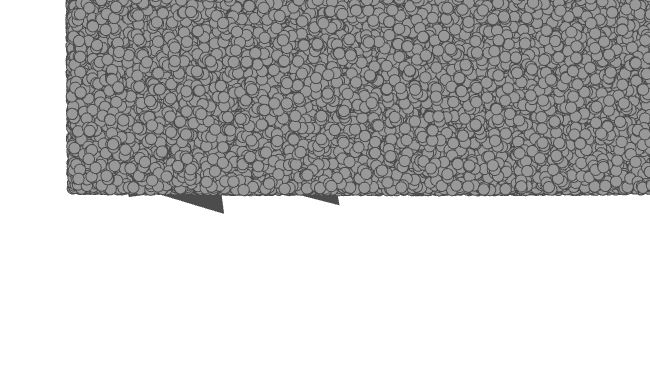
start +1 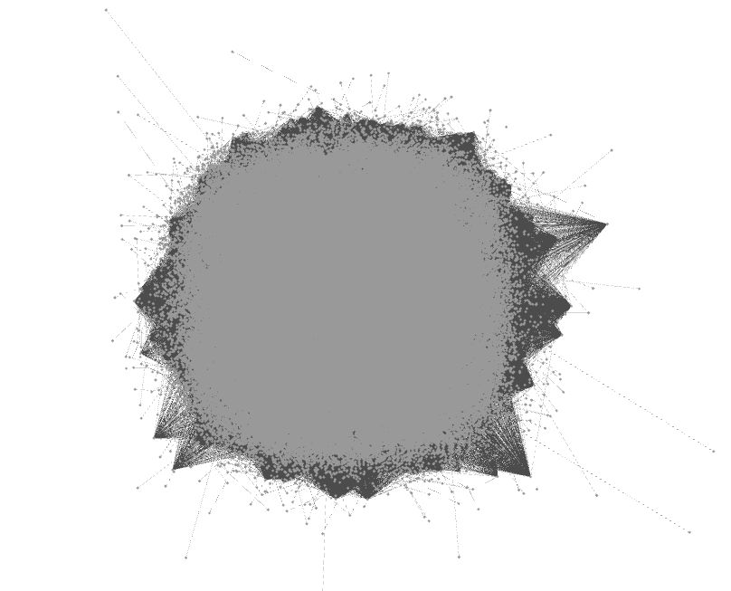
Start + 5 or 10ish 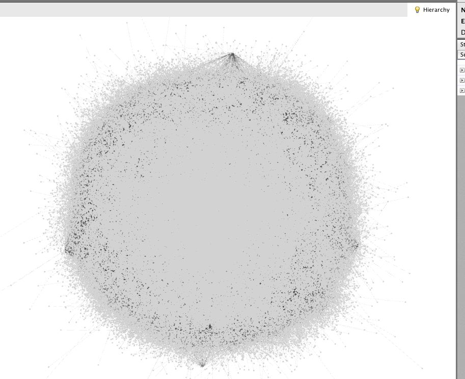
Start + 25ish 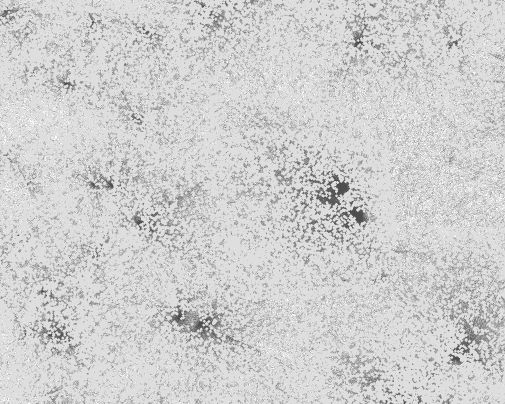
I stopped counting 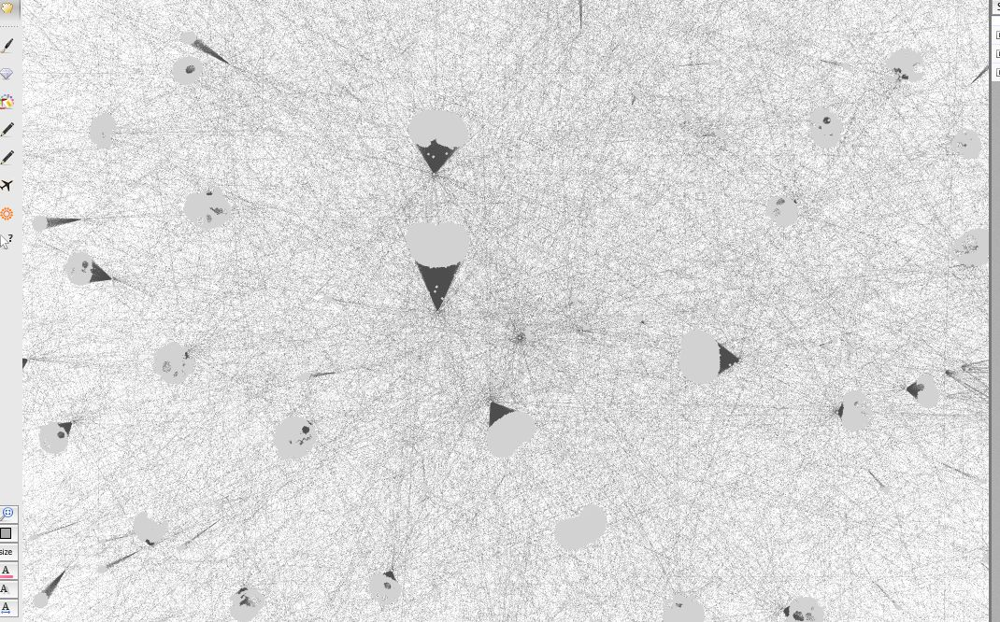
Still rather useless... but amusing 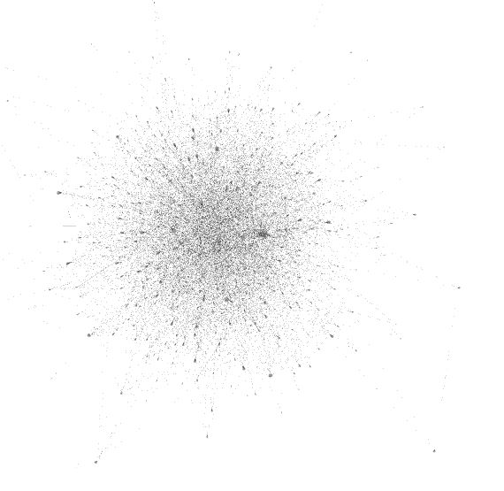
The eventual result 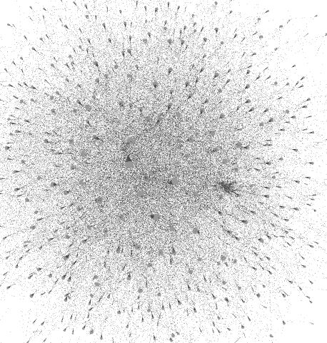
Zoom in 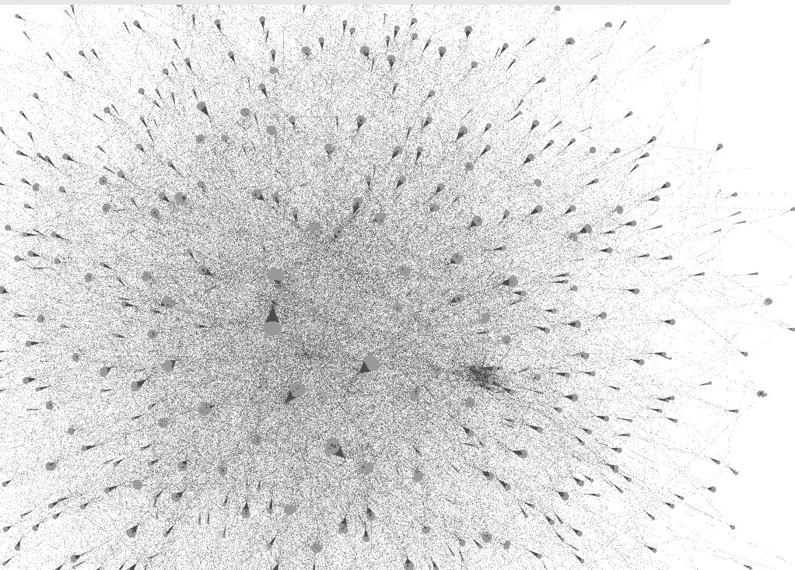
More 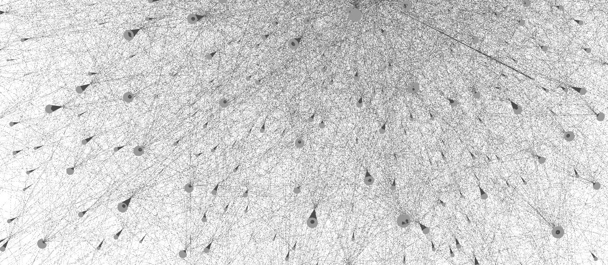
MORE 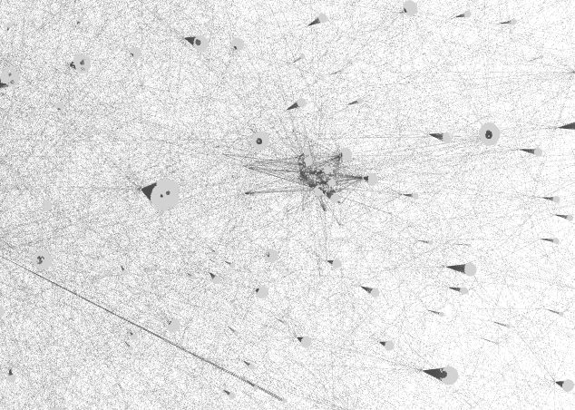
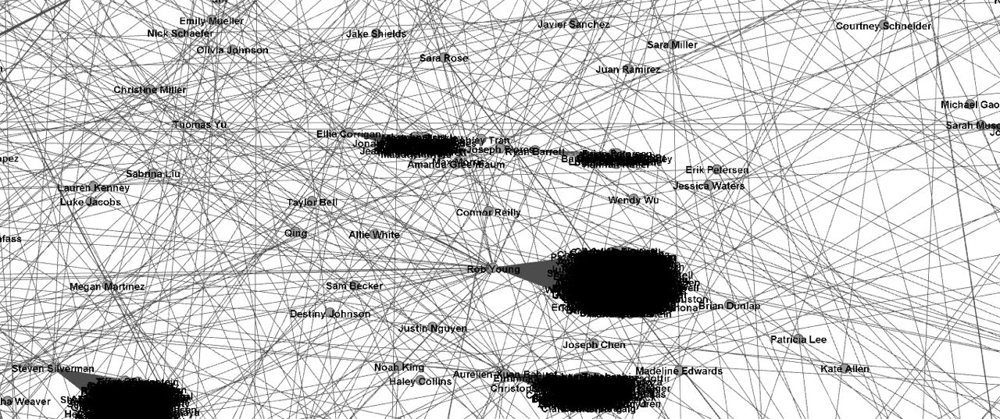
Zooming in and adding names 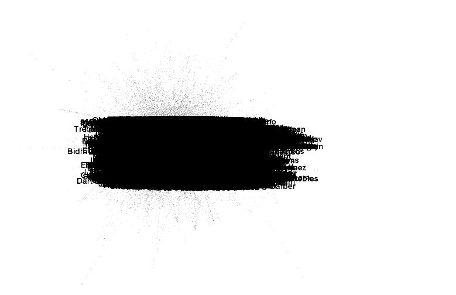
Zooming out with names...which leads to: 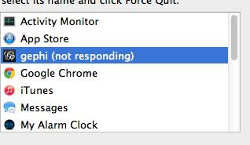
ops Anyway, these mean that I can actually call this finished.... The graph isn't necessarily useful in image format and it is best viewed through an application like gephi. Graphing the smaller graphs will probably result in useful images and I will get to this soon enough. Part 9: FinI was able to build the web scraper. It is able to gather data and return it in a format that can be analyzed. It was also able to do this without getting me banned from facebook, so that is nice. I was able to get a graphical representation of the data that can be explored and used and what not. So, I'm going to call this basically finished and mark it as complete. Here is all of my code: from urllib2 import URLError import mechanize import cookielib from bs4 import BeautifulSoup import re import networkx as nx import pygraphviz from random import randint from time import sleep import unicodedata from unidecode import unidecode from itertools import chain graph = nx.Graph() br = mechanize.Browser() # set up browser # sets up cookie handling br.set_handle_robots(False) cj = cookielib.LWPCookieJar() br.set_cookiejar(cj) br.set_handle_equiv(True) br.set_handle_redirect(True) br.set_handle_referer(True) # The three are to do deal with login redirects br.addheaders = [('User-agent', 'Mozilla/5.0 (X11; Linux x86_64) AppleWebKit/537.36 (KHTML, like Gecko) Chrome/39.0.2171.95 Safari/537.36')] # set browser id br.open('https://m.facebook.com/') # gets us to the login page br.select_form(nr=0) your_username = '' # set it your_password = '' # set it def print_response(br): """ :argument mechanize browser :return None Prints the text of a mechanize page in raw html """ print br.response().read() return () def login(email, password, br): """ :argument: string for email, string for password, and mechanize browser :return None Logins into Facebook """ br.form['email'] = email br.form['pass'] = password br.submit() def say_yes_basic(br): """ :argument mechanize browser :return None Hits a simple continue button """ br.form = list(br.forms())[0] control = br.form.find_control("submit[Continue]") br[control.name] br.submit() def say_this_is_okay(br): """ :argument Mechanize browser :return None Hits a simple submit This is Okay button """ br.form = list(br.forms())[0] control = br.form.find_control("submit[This is Okay]") br[control.name] br.submit() def control_something(br, something): """ :argument Mechanize browser, string with name of a control Hits the stated control """ br.form = list(br.forms())[0] control = br.form.find_control(something) br[control.name] # cite http://www.pythonforbeginners.com/cheatsheet/python-mechanize-cheat-sheet def control_explore(br): """ :argument Mechanize browser :return None Prints the list of controls """ br.form = list(br.forms())[0] for form in br.forms(): print form for control in br.form.controls: print (control, control.type, control.name, br[control.name]) def request_to_soup(br): """ :argument A mechanize browser :return None Takes the current mechanize browser and turns its raw html in to a bs4 object """ try: return (BeautifulSoup(br.response().read())) except AttributeError: print "Nonetype for response" print(br.geturl()) print (br.get_data()) br.open(br.geturl()) print "Trying again" return (BeautifulSoup(br.response().read())) def ncontrols(br): """ :argument Mechanize Browser :return A list of controls """ br.form = list(br.forms())[0] return [control.name for control in br.form.controls] def go_to_profile(br, name): """ :argument A mechanize browser, a text arguemt such as a user uid or profile name :returns None Takes the browser to a specific profile """ print name sleep(randint(1,20)) print "going" try: br.open('https://m.facebook.com/' + name) except URLError: print "Wifi lost, trying again" sleep(randint(200,400)) br.open('https://m.facebook.com/' + name) def control_control(br): """ :argument A mechanise browser :return None Loggs into facebook """ soup_response = request_to_soup(br) br.form = list(br.forms())[0] n = len(ncontrols(br)) print n print soup_response.title.text if n > 10: print "Bypassed Facebook security" return () if soup_response.title.text == "Remember Browser": print "not remembering" say_yes_basic(br) control_control(br) if soup_response.title.text == "Review Recent Login": #Two almost identicial options... try: print "reviewing" say_yes_basic(br) control_control(br) except mechanize.ControlNotFoundError: try: say_this_is_okay(br) control_control(br) except mechanize.ControlNotFoundError: try: say_yes_basic(br) control_control(br) except mechanize.ControlNotFoundError: print "Abnormal security settings" def go_to_my_friends(br): """ :argument Mechanise browser :return None Goes to the location where facebook stores your firends i.e the contents of degree one """ br.open('https://m.facebook.com/friends/center/friends/?ref=bookmark') def get_my_friends(br): """ :argument Mechanise Browser :return A list of bs4 objects each corresponding to an entry for a friend This may not work based on somethings that I'm not sure of, mainly the class_ = "" """ soup = request_to_soup(br) return soup.find_all('div', class_='x e y') # I have really know idea why facebook decided to use these letters... and it might need to be changed... def my_friend_to_uid(soup): """ :argument A bs4 object containing a link to your friend... not a friend of a friend :return a uid corresponding to the facebook profile that the bs4 object came from """ return re.search('(?<=uid=)[0-9]*', soup.a.get('href')).group(0) # gets the UID because the link we are given is a redirect which is annoying to archive def my_frend_to_name(soup): """ :argument a bs4 object containing a link to your friend, not a friend of a friend :return The friend's name This is probably unneccesary """ return soup.span.text def friends_friends_page(br, uid): sleep(randint(1,2)) go_to_profile(br, uid) actual_profile_url = br.geturl().replace('?_rdr','') print actual_profile_url + '?v=friends&startindex=00' sleep(randint(1,10)) br.open(actual_profile_url + '?v=friends&startindex=00') print br.geturl() def more_friends(br): strip = re.compile('=[0-9]*') current_url = br.geturl() index_location = request_to_soup(br).find_all('div', id="m_more_friends")[0].a.get('href') newindex = re.search('(?<=startindex=)[0-9]*', index_location).group(0) tempurl = re.sub(strip, '=', current_url) newurl = tempurl + newindex print newurl br.open(newurl) def print_line(ss): for x in range(0,len(ss)): print '====================================================================,' + str(x) print ss[x] print '====================================================================, x' def is_a_friend(tag): a = tag.has_attr('class') b = len(tag.find_all('a')) == 2 or len(tag.find_all('a')) == 1 c = tag.img == None d = tag.table == None e = not tag.has_attr('id') return a and b and c and d and e def get_friends_of_friends(br): soups = request_to_soup(br) return filter(is_a_friend, (soups.find_all('div'))) class user_id_keeping: def __init__(self): self.keeper = [] def adds(self, records): self.keeper += records def soup_uid_check(self,soup): return (soup.a.get('href').replace('?fref=fr_tab', '').lstrip('/')) in self.keeper def uid_check(self, uid): return uid in self.keeper all_uids = user_id_keeping() def get_rest_friends_of_friends(br, initial_friends): soup = request_to_soup(br) index_locations = soup.find_all('div', id="m_more_friends") # print index_locations if len(index_locations) != 0: strip = re.compile('=[0-9]*') current_url = (br.geturl()) # print current_url index_location = index_locations[0].a.get('href') newindex = re.search('(?<=startindex=)[0-9]*', index_location).group(0) tempurl = re.sub(strip, '=', current_url) newurl = tempurl + newindex print newurl try: br.open(newurl) except URLError: print "Network problems" sleep(randint(150,300)) try: br.open(newurl) except URLError: sleep(randint(800,1600)) br.open(newurl) initial_friends += get_friends_of_friends(br) #print initial_friends sleep(randint(0, 2)) get_rest_friends_of_friends(br, initial_friends) return initial_friends def get_all_friends(br, id): friends_friends_page(br, id) sleep(randint(1,2)) return get_rest_friends_of_friends(br, get_friends_of_friends(br)) def friends_graph(br, n, id, name,): print ('id is', id) print ('name is', name) friends_friends = get_all_friends(br, id) if friends_friends is None: print "Reached End" try: friends_friends_names = [a1.span.text for a1 in friends_friends if not all_uids.soup_uid_check(a1)] friends_friends_ids = [a1.a.get('href').replace('?fref=fr_tab', '').lstrip('/') for a1 in friends_friends if not all_uids.soup_uid_check(a1)] except NameError: print "Security settings" return () except AttributeError: print "security settings" return () # print friends_friends_ids all_uids.adds(friends_friends_ids) graph.add_edges_from([(name, a1) for a1 in friends_friends_names]) #nx.draw(graph) #plt.savefig('crap.png') nx.write_dot(graph, 'resultst.dot') if n - 1 == 0: print "Reached End" return () map(lambda ids, names: friends_graph(br, (n - 1), ids, names), friends_friends_ids, friends_friends_names) print "we have completed" + str(name) nx.write_dot(graph, 'temp.dot') def main(): profile_name = "set it" login('set it', 'set it', br) control_control(br) go_to_my_friends(br) a = get_my_friends(br) graph.add_edges_from([(profile_name, a1.span.text) for a1 in a]) # investiage if this is getting blank profile page people my_friends_uid = [my_friend_to_uid(a2) for a2 in a] all_uids.adds(my_friends_uid) my_friends_names = [a1.span.text for a1 in a] # print type(my_friends_uid[0]) # friends_graph(br, 2, my_friends_uid[0], a[0].span.text) map(lambda uids, names: friends_graph(br, 2, uids, names), my_friends_uid, my_friends_names) print "Just needs to be drawn" nx.write_dot(graph, 'results.dot') #nx.draw(graph) #plt.savefig('crap.png') print "done" #run this once to convert the dotfile def correct(): file = open('results.dot','r') all = file.read() file.close() allb = unicode(all, 'utf-8') allc = unidecode(allb) alla = unicode(allc, 'utf-8') b = unicodedata.normalize('NFKD', alla).encode('ascii', 'ignore') f = open('try.dot','w') f.write(b) # use this to recover the graph from the converted dot file def setup(): A = pygraphviz.AGraph(file='try.dot', encoding='ascii') a = nx.DiGraph(nx.from_agraph(A)) return a #finds the max centrality of any node def centrality_max(a): print((max(nx.degree_centrality(a).values()))) def friendship_paradox(graph): """ :param graph digraph :return returns the average dif between the number of friends that a node has and the average number of friends the node's friends have """ for x in graph.nodes(): graph.node[x]['nf'] = len(graph.successors(x)) # computes number of friends for x in graph.nodes(): graph.node[x]['nff'] = sum([graph.node[z]['nf'] for z in graph.successors(x)]) / (1 + len(graph.successors(x))) # computers the average number of friends that one's friends have return sum([graph.node[x]['nff'] - graph.node[x]['nf'] for x in graph.nodes()])/len(graph.nodes()) # returns average dif between the two numbers over all nodes. def all_sucs_not(graph, start, exclude, n): """ :param graph a digraph :start The person you are centering on :exclude The person you are excluding, probably where the graph started :n depth from start :return a list of nodes to be made into a sub graph """ stuff = [x for x in graph.successors(start) if x is not exclude] if n == 0: return stuff else: return stuff + list(chain.from_iterable([all_sucs_not(graph, x, exclude, (n-1)) for x in stuff])) def all_sucs_not_xlist(graph, start, exclude, n): """ :param graph a digraph :start The person you are centering on :exclude The list of persons you are excluding, probably where the graph started :n depth from start :return a list of nodes to be made into a sub graph """ stuff = [x for x in graph.successors(start) if x not in exclude ] if n == 0: return stuff + [start] else: return stuff + list(chain.from_iterable([all_sucs_not_xlist(graph, x, exclude, (n-1)) for x in stuff])) def all_sub_graphs(graph, start, depth): """ :param graph a digraph :param start the center of the graph or the node you want to have all these graphs link back to :depth depth of each from the neighboring nod :return a list of all subgraphs This function takes a digraph and a start and a depth. It takes the start and finds all the nodes around it. For each of those nodes it creates a subgraph going out to the depth specified. It writes a dot file for each of these dot files. """ for x in range(0, len(graph.successors(start))): results = [] new = graph.subgraph(all_sucs_not(graph, graph.successors(me)[x], me, depth)) #creates a subgraph results.append(new) nx.write_dot(new, graph.successors(me)[x] + '.dot') # write it return new def all_sub_graphs_xlist(graph, start, depth): """ Same as above but using lists to exlude :param graph a digraph :param start the center of the graph or the node you want to have all these graphs link back to :depth depth of each from the neighboring nod :return a list of all subgraphs This function takes a digraph and a start and a depth. It takes the start and finds all the nodes around it. For each of those nodes it creates a subgraph going out to the depth specified. It writes a dot file for each of these dot files. """ for x in range(0, len(graph.successors(start))): results = [] new = graph.subgraph(all_sucs_not_xlist(graph, graph.successors(me)[x], [me] + graph.successors(me) - graph.successors(me)[x], depth)) #creates a subgraph results.append(new) nx.write_dot(new,graph.successors(me)[x] + '.dot') # write it return new #run like this: #main() #correct() #graph = setup() #me = "Teodoro Fields Collin" #all_sub_graphs_xlist(graph, me, 2) #all_sub_graphs(graph, me, 2) #print friendship_paradox(graph) #result of this is 495 |